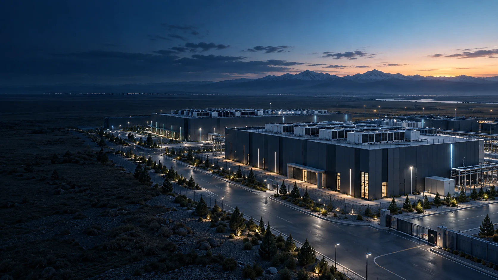
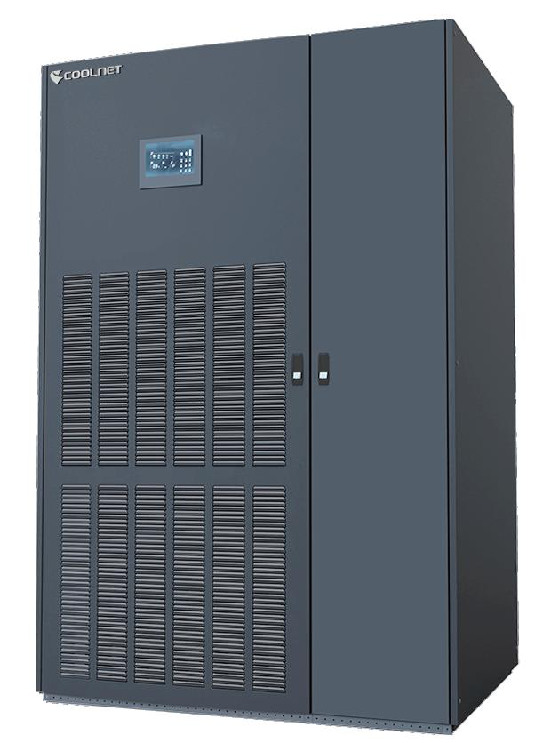
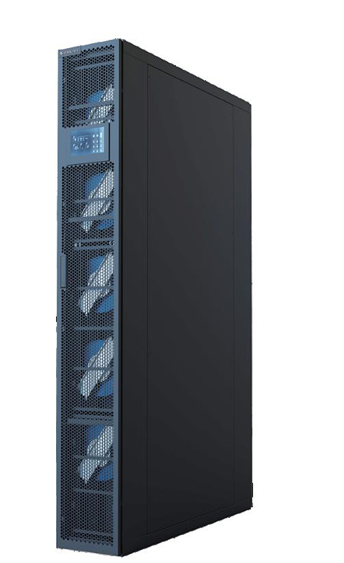
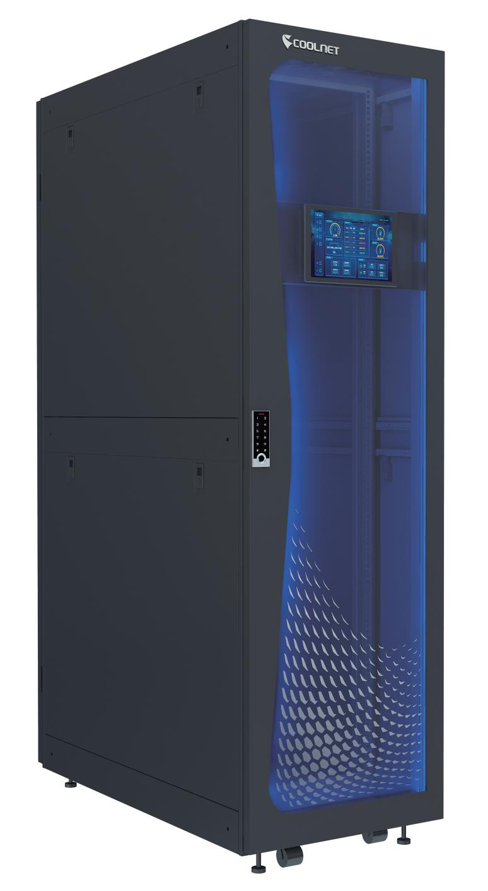
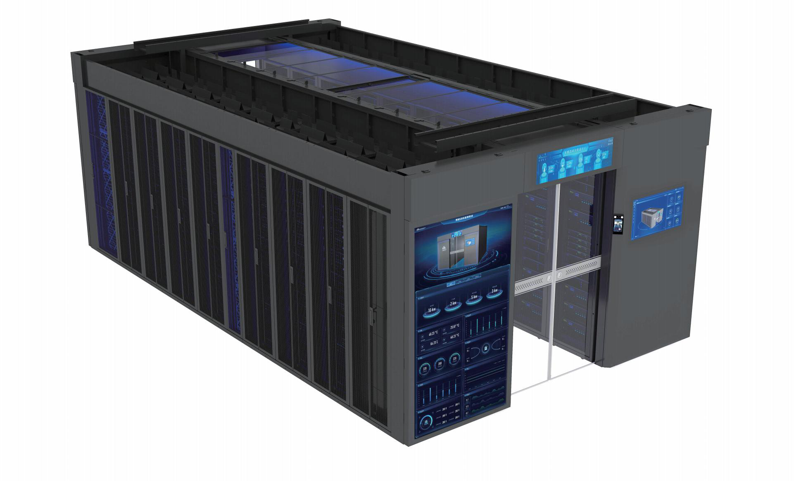
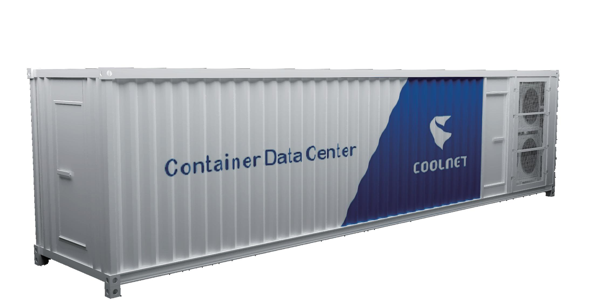
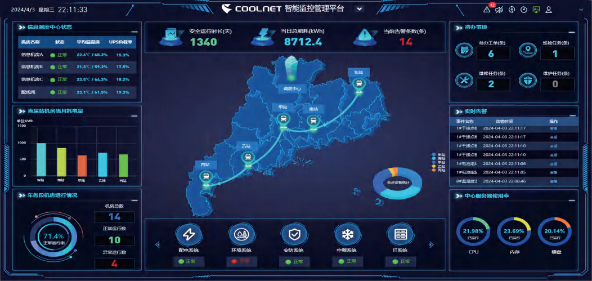
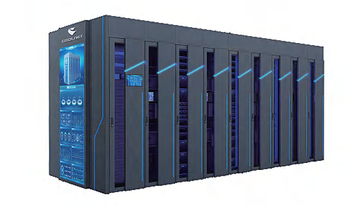

01 / 05 Инженерный ЦОД
Инженерный ЦОД.
От проекта до сервиса.
Объединяем питание, охлаждение и мониторинг в инфраструктуру для бизнеса и AI. От технической концепции до ввода и обслуживания.

01 / 05 Инженерный ЦОД
Объединяем питание, охлаждение и мониторинг в инфраструктуру для бизнеса и AI. От технической концепции до ввода и обслуживания.

02 / 05 Сценарий
Рассчитаем нагрузку и резервирование до закупки оборудования, чтобы бюджет проекта опирался на потребности бизнеса и возможности площадки.

03 / 05 Плотность
Cold plate, CDU и иммерсионное охлаждение — под требования GPU-серверов. Подготовим инженерную основу для плотных вычислительных нагрузок.

04 / 05 Эксплуатация
Регламентное обслуживание и диагностика Coolnet помогают выявлять отклонения до аварии и планировать модернизацию по состоянию систем.

05 / 05 Следующий шаг
Укажите IT-нагрузку и планы роста. Определим исходные требования, состав систем и следующий этап проекта.
Запуск, рост мощности, обновление систем или AI-кластер — выберите задачу, для которой нужна инженерная инфраструктура.
Согласовать питание, охлаждение и мониторинг до строительства — чтобы системы работали как единый комплекс.
Оценить запас мощности и разместить новые стойки с учётом резервирования и режима работы площадки.
Выявить ограничения действующих систем и направить вложения на оборудование, которое сдерживает рост или повышает риски.
Подобрать отвод тепла и электропитание под GPU-серверы, чтобы инженерные ограничения не сдерживали вычисления.
CoreX Engineering — инженерный интегратор ЦОД в Казахстане и партнёр Coolnet. Команда из 25 штатных специалистов связывает IT-нагрузку, питание и холодоснабжение в один проект: от концепции и прямой поставки до монтажа, ввода и сервиса.
Фиксируем состав работ, точки подключения и зоны ответственности. Заказчик получает основу для контроля бюджета, поставок и готовности площадки.
Сопоставляем оборудование с текущим потреблением, резервированием и планом роста. Это помогает распределять инвестиции по этапам развития ЦОД.
Закладываем доступ к оборудованию, последовательность переключений и окна работ. Эксплуатационная команда заранее понимает, как обслуживать и расширять системы.
Каждый этап заканчивается конкретным результатом: требованиями, документацией, смонтированными системами, протоколами испытаний или планом сервиса.

Оцениваем IT-нагрузку, ресурсы площадки и резервирование. Формируем техническую концепцию — основу для бюджета и выбора оборудования.
Разрабатываем схемы и спецификации питания, охлаждения и мониторинга. Согласуем интерфейсы до монтажа, чтобы сократить риск переделок.
Поставляем и устанавливаем оборудование по проектной спецификации. Контролируем комплектность и подключения до начала испытаний.
Настраиваем системы и проверяем их по согласованной программе. Результаты испытаний дают заказчику основания для приёмки и ввода.
Обслуживаем системы по регламентам, анализируем состояние и рост нагрузки. Планируем обновление оборудования до того, как оно станет ограничением.
Квалификация производителя для монтажа, пусконаладки и обслуживания прецизионных кондиционеров и модульных ИБП.
Авторизация Coolnet подтверждает: CoreX Engineering выполняет сервис по регламентам производителя.
Сертификаты выданы 6 марта 2026 года.
Выбираем не отдельные устройства, а совместимую конфигурацию. Мощность, резервирование и сервис определяют стоимость владения системой.

Охлаждение помещения с выбором подачи воздуха под планировку. Помогает поддерживать условия для стабильной работы серверов.
Подробнее о решении
Охлаждение рядом с источником тепла сокращает путь воздуха. Регулирование производительности позволяет учитывать изменение нагрузки.
Подробнее о решении
Питание, охлаждение и мониторинг в одном шкафу — для размещения IT-нагрузки на ограниченной площади.
Открыть в каталоге (PDF)
Стойки и инженерные системы в одном модуле. Позволяет планировать расширение площадки отдельными блоками.
Открыть в каталоге (PDF)
ЦОД заводской сборки для наружного размещения. Предварительная сборка и испытания сокращают объём работ на подготовленной площадке.
Подробнее о решении
Модульная архитектура и горячая замена упрощают обслуживание. Мощность и резерв выбираются под нагрузку и план роста.
Подробнее о решении
Данные питания, охлаждения и среды в одном интерфейсе — для контроля отклонений и планирования ресурсов ЦОД.
Подробнее о решении
Распределение питания и измерение электрических параметров помогают контролировать загрузку линий и потребление.
Подробнее о решении
Инженерный модуль для вычислительных стоек. Питание и охлаждение согласованы в одной конфигурации; состав показан в каталоге Coolnet.
Открыть в каталоге (PDF)Да. Укажите назначение ЦОД, площадку, текущую или планируемую IT-нагрузку. На этапе пре-сейла уточним исходные данные и сформируем техническую концепцию для дальнейшего расчёта.
Да. Подберём охлаждение, ИБП, распределение питания или мониторинг под конкретную задачу. Проверка подключений и совместимости помогает избежать закупки оборудования, которое не подходит действующей площадке.
Да. Аудит покажет запас мощности и ограничения систем. Последовательность переключений и окна работ согласуем с эксплуатационной командой; возможность расширения без остановки определяется схемой ЦОД.
От IT-мощности, плотности стоек, резервирования, внешних подключений и состава поставки. Поэтапная конфигурация позволяет соотнести вложения с ростом нагрузки. Сроки определяем с учётом готовности площадки и поставок.
Для оборудования Coolnet составляем регламент профилактики и диагностики, согласуем гарантийные и постгарантийные работы. Для круглосуточной эксплуатации отдельно определяем режим поддержки, время реакции и SLA в договоре.
Планируете новый ЦОД, расширение или AI-кластер? Укажите площадку, IT-нагрузку и сроки. Инженер уточнит резервирование и подключения — на этой основе подготовим конфигурацию и коммерческое предложение.